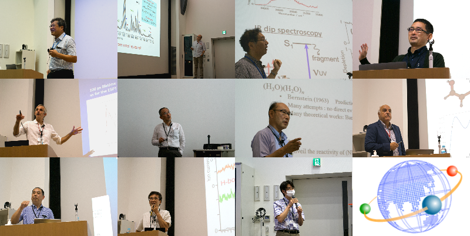
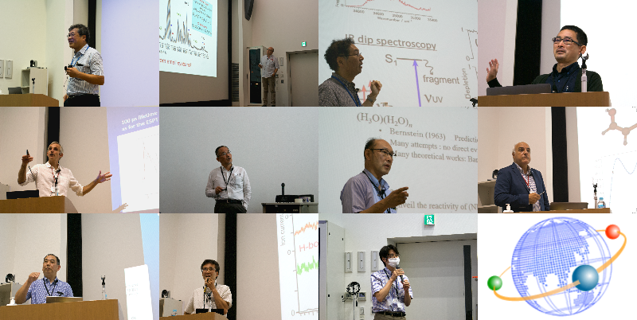

Seminar
7th Symposium
29th-30th July 2024
Digital Lecture Hall, Tokyo Institute of Technology (Ookayama Campus)
31st July 2024
Satellite Meeting at Hotel Belnatio, Niigata
6th Symposium
16th-20th October 2023
Technische Universität Berlin
<Program>
<Group Photo>
5th Symposium
6th September 2023
Fioria, Atema-Kogen Highland Resort Hotel Belnatio
<Program>
4th Symposium
24th-26th January 2023
UNIVERSITÉ PARIS-SACLAY
<Program>
<Group Photo>

3rd Symposium
29th September 2022
Lecture Hall, S8 Bldg, Suzukakedai Campus, Tokyo Institute of Technology
<Program>
<List of Posters>
<Speakers & Group Photos>
 

2nd symposium (on line)
10th & 11th March 2022
<Program>
Kick off symposium (on line)
26th October 2021
<Program>
<List of Posters>
<Poster Map>